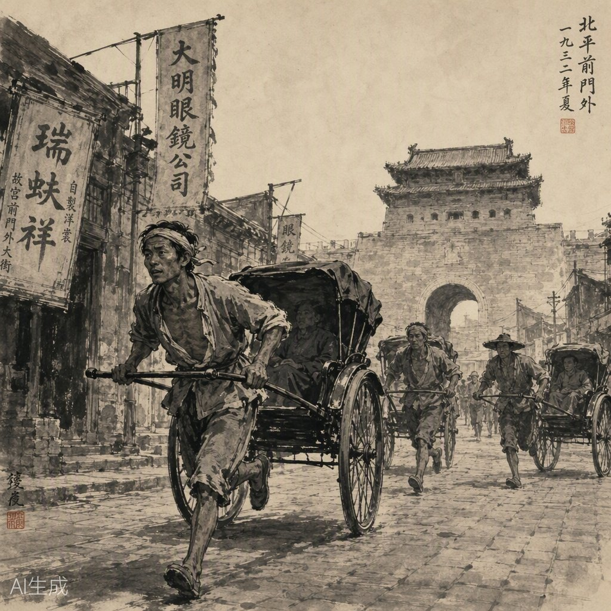
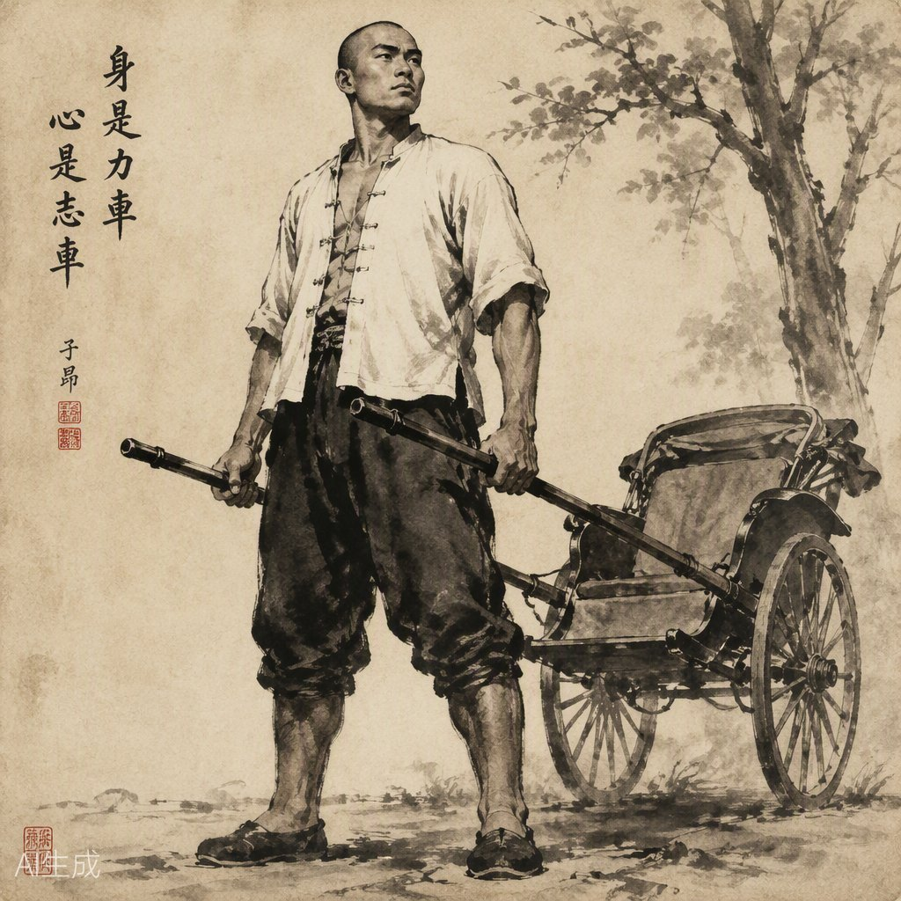
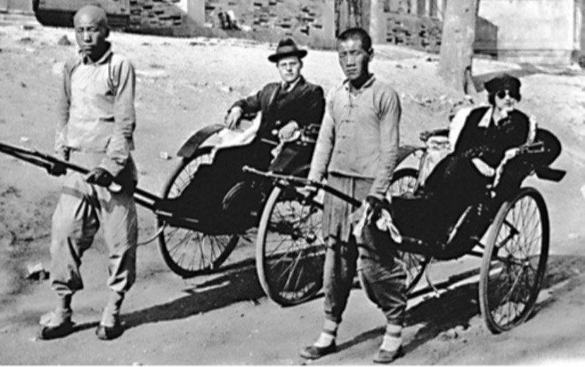
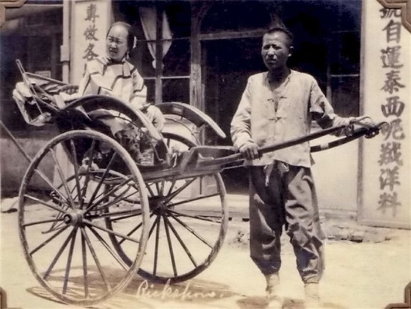
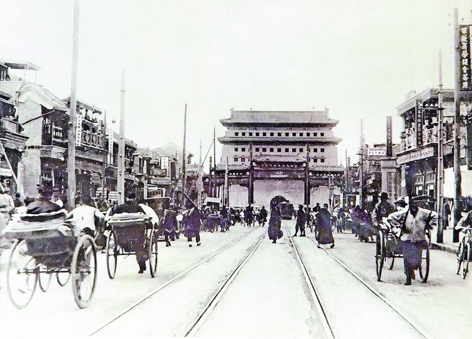
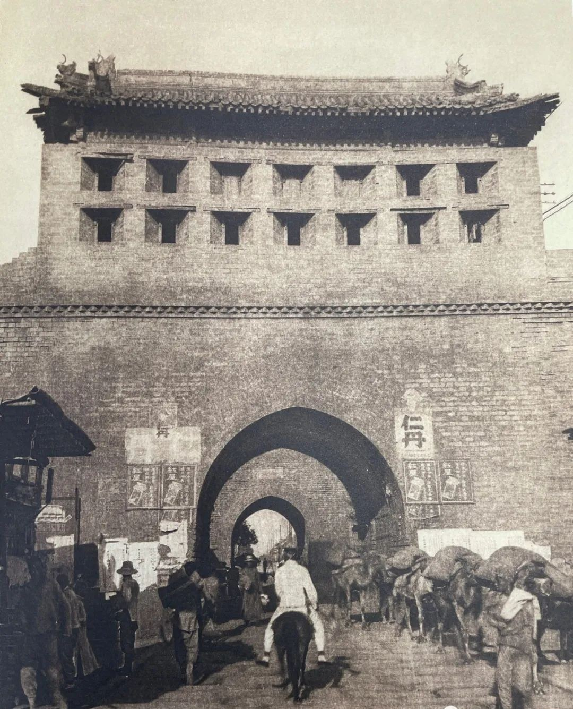

我们所要介绍的是祥子，不是骆驼，因为“骆驼”只是个外号；那么，我们就先说祥子，随手儿把骆驼与祥子那点关系说过去，也就算了。
比这一派岁数稍大的，或因身体的关系而跑得稍差点劲的，或因家庭的关系而不敢白耗一天的，大概就多数的拉八成新的车；人与车都有相当的漂亮，所以在要价儿的时候也还能保持住相当的尊严。这派的车夫，也许拉“整天”，也许拉“半天”。在后者的情形下，因为还有相当的精气神，所以无论冬天夏天总是“拉晚儿”[3]。夜间，当然比白天需要更多的留神与本事；钱自然也多挣一些。
年纪在四十以上，二十以下的，恐怕就不易在前两派里有个地位了。他们的车破，又不敢“拉晚儿”，所以只能早早的出车，希望能从清早转到午后三四点钟，拉出“车份儿”和自己的嚼谷[4]。他们的车破，跑得慢，所以得多走路，少要钱。到瓜市，果市，菜市，去拉货物，都是他们；钱少，可是无须快跑呢。
在这里，二十岁以下的——有的从十一二岁就干这行儿——很少能到二十岁以后改变成漂亮的车夫的，因为在幼年受了伤，很难健壮起来。他们也许拉一辈子洋车，而一辈子连拉车也没出过风头。那四十以上的人，有的是已拉了十年八年的车，筋肉的衰损使他们甘居人后，他们渐渐知道早晚是一个跟头会死在马路上。他们的拉车姿势，讲价时的随机应变，走路的抄近绕远，都足以使他们想起过去的光荣，而用鼻翅儿扇着那些后起之辈。可是这点光荣丝毫不能减少将来的黑暗，他们自己也因此在擦着汗的时节常常微叹。不过，以他们比较另一些四十上下岁的车夫，他们还似乎没有苦到了家。这一些是以前决没想到自己能与洋车发生关系，而到了生和死的界限已经不甚分明，才抄起车把来的。被撤差的巡警或校役，把本钱吃光的小贩，或是失业的工匠，到了卖无可卖，当无可当的时候，咬着牙，含着泪，上了这条到死亡之路。这些人，生命最鲜壮的时期已经卖掉，现在再把窝窝头变成的血汗滴在马路上。没有力气，没有经验，没有朋友，就是在同行的当中也得不到好气儿。他们拉最破的车，皮带不定一天泄多少次气；一边拉着人还得一边儿央求人家原谅，虽然十五个大铜子儿已经算是甜买卖。

此外，因环境与知识的特异，又使一部分车夫另成派别。生于西苑海甸的自然以走西山，燕京，清华，较比方便；同样，在安定门外的走清河，北苑；在永定门外的走南苑……这是跑长趟的，不愿拉零座；因为拉一趟便是一趟，不屑于三五个铜子的穷凑了。可是他们还不如东交民巷的车夫的气儿长，这些专拉洋买卖的[5]讲究一气儿由交民巷拉到玉泉山，颐和园或西山。气长也还算小事，一般车夫万不能争这项生意的原因，大半还是因为这些吃洋饭的有点与众不同的知识，他们会说外国话。英国兵，法国兵，所说的万寿山，雍和宫，“八大胡同”，他们都晓得。他们自己有一套外国话，不传授给别人。他们的跑法也特别，四六步儿不快不慢，低着头，目不旁视的，贴着马路边儿走，带出与世无争，而自有专长的神气。因为拉着洋人，他们可以不穿号坎，而一律的是长袖小白褂，白的或黑的裤子，裤筒特别肥，脚腕上系着细带；脚上是宽双脸千层底青布鞋；干净，利落，神气。一见这样的服装，别的车夫不会再过来争座与赛车，他们似乎是属于另一行业的。
有了这点简单的分析，我们再说祥子的地位，就像说——我们希望——一盘机器上的某种钉子那么准确了。祥子，在与“骆驼”这个外号发生关系以前，是个较比有自由的洋车夫，这就是说，他是属于年轻力壮，而且自己有车的那一类：自己的车，自己的生活，都在自己手里，高等车夫。
这可绝不是件容易的事。一年，二年，至少有三四年；一滴汗，两滴汗，不知道多少万滴汗，才挣出那辆车。从风里雨里的咬牙，从饭里茶里的自苦，才赚出那辆车。那辆车是他的一切挣扎与困苦的总结果与报酬，像身经百战的武士的一颗徽章。在他赁人家的车的时候，他从早到晚，由东到西，由南到北，像被人家抽着转的陀螺，他没有自己。可是在这种旋转之中，他的眼并没有花，心并没有乱，他老想着远远的一辆车，可以使他自由，独立，像自己的手脚的那么一辆车。有了自己的车，他可以不再受拴车的[6]人们的气，也无须敷衍别人；有自己的力气与洋车，睁开眼就可以有饭吃。
他不怕吃苦，也没有一般洋车夫的可以原谅而不便效法的恶习，他的聪明和努力都足以使他的志愿成为事实。假若他的环境好一些，或多受着点教育，他一定不会落在“胶皮团”[7]里，而且无论是干什么，他总不会辜负了他的机会。不幸，他必须拉洋车；好，在这个营生里他也证明出他的能力与聪明。他仿佛就是在地狱里也能作个好鬼似的。生长在乡间，失去了父母与几亩薄田，十八岁的时候便跑到城里来。带着乡间小伙子的足壮与诚实，凡是以卖力气就能吃饭的事他几乎全作过了。可是，不久他就看出来，拉车是件更容易挣钱的事；作别的苦工，收入是有限的；拉车多着一些变化与机会，不知道在什么时候与地点就会遇到一些多于所希望的报酬。自然，他也晓得这样的机遇不完全出于偶然，而必须人与车都得漂亮精神，有货可卖才能遇到识货的人。想了一想，他相信自己有那个资格：他有力气，年纪正轻；所差的是他还没有跑过，与不敢一上手就拉漂亮的车。但这不是不能胜过的困难，有他的身体与力气作基础，他只要试验个十天半月的，就一定能跑得有个样子，然后去赁辆新车，说不定很快的就能拉上包车，然后省吃俭用的一年二年，即使是三四年，他必能自己打上一辆车，顶漂亮的车！看着自己的青年的肌肉，他以为这只是时间的问题，这是必能达到的一个志愿与目的，绝不是梦想！
他的身量与筋肉都发展到年岁前边去；二十来岁，他已经很大很高，虽然肢体还没被年月铸成一定的格局，可是已经像个成人了——一个脸上身上都带出天真淘气的样子的大人。看着那高等的车夫，他计划着怎样杀进他的腰[8]去，好更显出他的铁扇面似的胸，与直硬的背；扭头看看自己的肩，多么宽，多么威严！杀好了腰，再穿上肥腿的白裤，裤脚用鸡肠子带儿系往，露出那对“出号”的大脚！是的，他无疑的可以成为最出色的车夫；傻子似的他自己笑了。
他没有什么模样，使他可爱的是脸上的精神。头不很大，圆眼，肉鼻子，两条眉很短很粗，头上永远剃得发亮。腮上没有多余的肉，脖子可是几乎与头一边儿[9]粗；脸上永远红扑扑的，特别亮的是颧骨与右耳之间一块不小的疤——小时候在树下睡觉，被驴啃了一口。他不甚注意他的模样，他爱自己的脸正如同他爱自己的身体，都那么结实硬棒；他把脸仿佛算在四肢之内，只要硬棒就好。是的，到城里以后，他还能头朝下，倒着立半天。这样立着，他觉得，他就很像一棵树，上下没有一个地方不挺脱的。

他确乎有点像棵树，坚壮，沉默，而又有生气。他有自己的打算，有些心眼，但不好向别人讲论。在洋车夫里，个人的委屈与困难是公众的话料，“车口儿”上，小茶馆中，大杂院里，每人报告着形容着或吵嚷着自己的事，而后这些事成为大家的财产，像民歌似的由一处传到一处。祥子是乡下人，口齿没有城里人那么灵便；设若口齿灵利是出于天才，他天生来的不愿多说话，所以也不愿学着城里人的贫嘴恶舌。他的事他知道，不喜欢和别人讨论。因为嘴常闲着，所以他有工夫去思想，他的眼仿佛是老看着自己的心。只要他的主意打定，他便随着心中所开开的那条路儿走；假若走不通的话，他能一两天不出一声，咬着牙，好似咬着自己的心！
祥子开始拉车
Сянцзы начинает работать рикшей
他决定去拉车，就拉车去了。赁了辆破车，他先练练腿。第一天没拉着什么钱。第二天的生意不错，可是躺了两天，他的脚脖子肿得像两条瓠子似的，再也抬不起来。他忍受着，不管是怎样的疼痛。他知道这是不可避免的事，这是拉车必须经过的一关。非过了这一关，他不能放胆的去跑。
脚好了之后，他敢跑了。这使他非常的痛快，因为别的没有什么可怕的了：地名他很熟习，即使有时候绕点远没大关系，好在自己有的是力气。拉车的方法，以他干过的那些推、拉、扛、挑的经验来领会，也不算十分难。况且他有他的主意：多留神，少争胜，大概总不会出了毛病。至于讲价争座，他的嘴慢气盛，弄不过那些老油子们。知道这个短处，他干脆不大到“车口儿”上去；哪里没车，他放在哪里。在这僻静的地点，他可以从容的讲价，而且有时候不肯要价，只说声：“坐上吧，瞧着给！”他的样子是那么诚实，脸上是那么简单可爱，人们好像只好信任他，不敢想这个傻大个子是会敲人的。即使人们疑心，也只能怀疑他是新到城里来的乡下佬儿，大概不认识路，所以讲不出价钱来。及至人们问到，“认识呀？”他就又像装傻，又像耍俏的那么一笑，使人们不知怎样才好。
两三个星期的工夫，他把腿溜出来了。他晓得自己的跑法很好看。跑法是车夫的能力与资格的证据。那撇着脚，像一对蒲扇在地上扇乎的，无疑的是刚由乡间上来的新手。那头低得很深，双脚蹭地，跑和走的速度差不多，而颇有跑的表示的，是那些五十岁以上的老者们。那经验十足而没什么力气的却另有一种方法：胸向内含，度数很深；腿抬得很高；一走一探头；这样，他们就带出跑得很用力的样子，而在事实上一点也不比别人快；他们仗着“作派”去维持自己的尊严。祥子当然决不采取这几种姿态。他的腿长步大，腰里非常的稳，跑起来没有多少响声，步步都有些伸缩，车把不动，使座儿觉到安全，舒服。说站住，不论在跑得多么快的时候，大脚在地上轻蹭两蹭，就站住了；他的力气似乎能达到车的各部分。脊背微俯，双手松松拢住车把，他活动、利落、准确；看不出急促而跑得很快，快而没有危险。就是在拉包车的里面，这也得算很名贵的。

他换了新车。从一换车那天，他就打听明白了，像他赁的那辆——弓子软，铜活[10]地道，雨布大帘，双灯，细脖大铜喇叭——值一百出头；若是漆工与铜活含忽一点呢，一百元便可以打住。大概的说吧，他只要有一百块钱，就能弄一辆车。猛然一想，一天要是能剩一角的话，一百元就是一千天，一千天！把一千天堆到一块，他几乎算不过来这该有多么远。但是，他下了决心，一千天，一万天也好，他得买车——第一步他应当，他想好了，去拉包车。遇上交际多，饭局[11]多的主儿，平均一月有上十来个饭局，他就可以白落两三块的车饭钱。加上他每月再省出个块儿八角的，也许是三头五块的，一年就能剩起五六十块！这样，他的希望就近便多多了。他不吃烟，不喝酒，不赌钱，没有任何嗜好，没有家庭的累赘，只要他自己肯咬牙，事儿就没有个不成。他对自己起下了誓，一年半的工夫，他——祥子——非打成自己的车不可！是现打的，不要旧车见过新的。
他真拉上了包月。可是，事实并不完全帮助希望。不错，他确是咬了牙，但是到了一年半他并没还上那个誓愿。包车确是拉上了，而且谨慎小心的看着事情；不幸，世上的事并不是一面儿的。他自管小心他的，东家并不因此就不辞他；不定是三两个月，还是十天八天，吹[12]了；他得另去找事。自然，他得一边儿找事，还得一边儿拉散座；骑马找马，他不能闲起来。在这种时节，他常常闹错儿。他还强打着精神，不专为混一天的嚼谷，而且要继续着积储买车的钱。可是强打精神永远不是件妥当的事：拉起车来，他不能专心一志的跑，好像老想着些什么，越想便越害怕，越气不平。假若老这么下去，几时才能买上车呢？为什么这样呢？难道自己还算个不要强的？在这么乱想的时候，他忘了素日的谨慎。皮轮子上了碎铜烂磁[13]片，放了炮；只好收车。更严重一些的，有时候碰了行人，甚至有一次因急于挤过去而把车轴盖碰丢了。设若他是拉着包车，这些错儿绝不能发生；一搁下了事，他心中不痛快，便有点愣头磕脑的。碰坏了车，自然要赔钱；这更使他焦躁，火上加了油；为怕惹出更大的祸，他有时候懊睡一整天。及至睁开眼，一天的工夫已白白过去，他又后悔，自恨。还有呢，在这种时期，他越着急便越自苦，吃喝越没规则；他以为自己是铁作的，可是敢情他也会病。病了，他舍不得钱去买药，自己硬挺着；结果，病越来越重，不但得买药，而且得一气儿休息好几天。这些个困难，使他更咬牙努力，可是买车的钱数一点不因此而加快的凑足。
祥子第一次买车
Сянцзы покупает первую рикшу
整整的三年，他凑足了一百块钱！
他不能再等了。原来的计划是买辆最完全最新式最可心的车，现在只好按着一百块钱说了。不能再等；万一出点什么事再丢失几块呢！恰巧有辆刚打好的车——定作而没钱取货的——跟他所期望的车差不甚多；本来值一百多，可是因为定钱放弃了，车铺愿意少要一点。祥子的脸通红，手哆嗦着，拍出九十六块钱来：“我要这辆车！”铺主打算挤到个整数，说了不知多少话，把他的车拉出去又拉进来，支开棚子，又放下，按按喇叭，每一个动作都伴着一大串最好的形容词；最后还在钢轮条上踢了两脚：“听听声儿吧，铃铛似的！拉去吧，你就是把车拉碎了，要是钢条软了一根，你拿回来，把它摔在我脸上！一百块，少一分咱们吹！”祥子把钱又数了一遍：“我要这辆车，九十六！”铺主知道是遇见了一个心眼的人，看看钱，看看祥子，叹了口气：“交个朋友，车算你的了；保六个月除非你把大箱碰碎，我都白给修理；保单，拿着！”
祥子的手哆嗦得更厉害了，揣起保单，拉起车，几乎要哭出来。拉到个僻静地方，细细端详自己的车，在漆板上试着照照自己的脸！越看越可爱，就是那不尽合自己的理想的地方也都可以原谅了，因为已经是自己的车了。把车看得似乎暂时可以休息会儿了，他坐在了水簸箕的新脚垫儿上，看着车把上的发亮的黄铜喇叭。他忽然想起来，今年是二十二岁。因为父母死得早，他忘了生日是在哪一天。自从到城里来，他没过一次生日。好吧，今天买上了新车，就算是生日吧，人的也是车的，好记，而且车既是自己的心血，简直没什么不可以把人与车算在一块的地方。

怎样过这个“双寿”呢？祥子有主意：头一个买卖必须拉个穿得体面的人，绝对不能是个女的。最好是拉到前门，其次是东安市场。拉到了，他应当在最好的饭摊上吃顿饭，如热烧饼夹爆羊肉之类的东西。吃完，有好买卖呢就再拉一两个；没有呢，就收车；这是生日！

自从有了这辆车，他的生活过得越来越起劲了。拉包月也好，拉散座也好，他天天用不着为“车份儿”着急，拉多少钱全是自己的。心里舒服，对人就更和气，买卖也就更顺心。拉了半年，他的希望更大了：照这样下去，干上二年，至多二年，他就又可以买辆车，一辆，两辆……他也可以开车厂子了！
可是，希望多半落空，祥子的也非例外。
二
Глава вторая
因为高兴，胆子也就大起来；自从买了车，祥子跑得更快了。自己的车，当然格外小心，可是他看看自己，再看看自己的车，就觉得有些不是味儿，假若不快跑的话。
他自己，自从到城里来，又长高了一寸多。他自己觉出来，仿佛还得往高里长呢。不错，他的皮肤与模样都更硬棒与固定了一些，而且上唇上已有了小小的胡子；可是他以为还应当再长高一些。当他走到个小屋门或街门而必须大低头才能进去的时候，他虽不说什么，可是心中暗自喜欢，因为他已经是这么高大，而觉得还正在发长，他似乎既是个成人，又是个孩子，非常有趣。
这么大的人，拉上那么美的车，他自己的车，弓子软得颤悠颤悠的，连车把都微微的动弹；车箱是那么亮，垫子是那么白，喇叭是那么响；跑得不快怎能对得起自己呢？怎能对得起那辆车呢？这一点不是虚荣心，而似乎是一种责任，非快跑，飞跑，不足以充分发挥自己的力量与车的优美。那辆车也真是可爱，拉过了半年来的，仿佛处处都有了知觉与感情，祥子的一扭腰，一蹲腿，或一直脊背，它都就马上应合着，给祥子以最顺心的帮助，他与它之间没有一点隔膜别扭的地方。赶到遇上地平人少的地方，祥子可以用一只手拢着把，微微轻响的皮轮像阵利飕的小风似的催着他跑，飞快而平稳。拉到了地点，祥子的衣裤都拧得出汗来，哗哗的，像刚从水盆里捞出来的。他感到疲乏，可是很痛快的，值得骄傲的，一种疲乏，如同骑着名马跑了几十里那样。
假若胆壮不就是大意，祥子在放胆跑的时候可并不大意。不快跑若是对不起人，快跑而碰伤了车便对不起自己。车是他的命，他知道怎样的小心。小心与大胆放在一处，他便越来越能自信，他深信自己与车都是铁作的。
因此，他不但敢放胆的跑，对于什么时候出车也不大去考虑。他觉得用力拉车去挣口饭吃，是天下最有骨气的事；他愿意出去，没人可以拦住他。外面的谣言他不大往心里听，什么西苑又来了兵，什么长辛店又打上了仗，什么西直门外又在拉，什么齐化门已经关了半天，他都不大注意。自然，街上铺户已都上了门，而马路上站满了武装警察与保安队，他也不便故意去找不自在，也和别人一样急忙收车了。可是，谣言，他不信。他知道怎样谨慎，特别因为车是自己的，但是他究竟是乡下人，不像城里人那样听见风便是雨。再说，他的身体使他相信，即使不幸赶到“点儿”上，他必定有办法，不至于吃亏；他不是容易欺侮的，那么大的个子，那么宽的肩膀！

战争的消息与谣言几乎每年随着春麦一块儿往起长，麦穗与刺刀可以算作北方人的希望与忧惧的象征。祥子的新车刚交半岁的时候，正是麦子需要春雨的时节。春雨不一定顺着人民的盼望而降落，可是战争不管有没有人盼望总会来到。谣言吧，真事儿吧，祥子似乎忘了他曾经作过庄稼活；他不大关心战争怎样的毁坏农地，也不大注意春雨的有无。他只关心他的车，他的车能产生烙饼与一切吃食，它是块万能的田地，很驯顺的随着他走，一块活地，宝地。因为缺雨，因为战争的消息，粮食都长了价钱；这个，祥子知道。可是他和城里人一样的只会抱怨粮食贵，而一点主意没有；粮食贵，贵吧，谁有法儿教它贱呢？这种态度使他只顾自己的生活，把一切祸患灾难都放在脑后。